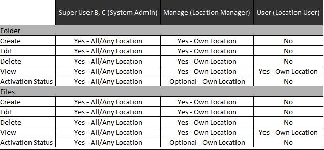
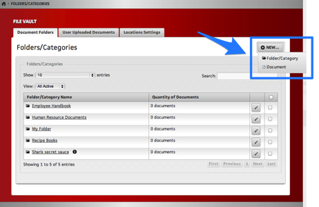
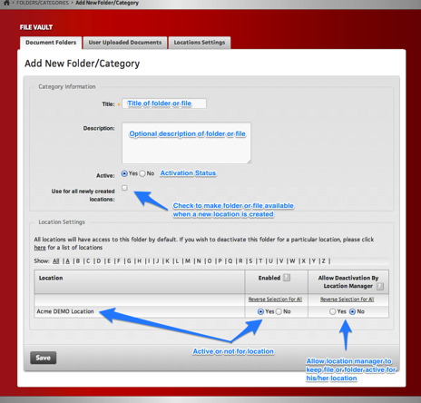
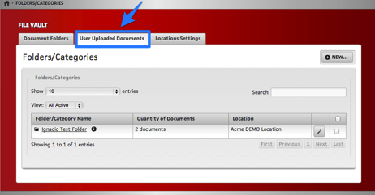
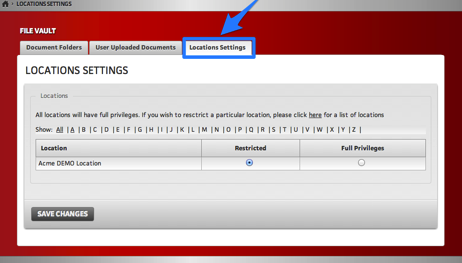

Initial Setup
The file vault is available all locations within a system. It must be activated by using the “File Vault Active” toggle within the system settings page. This toggle doesn’t affect the actual functions of the file vault, it only turns on or off the main menu icon/link to file vault area and access for users.

Roles
System Admin (Super User B):
This user has full admin privileges over files and folders within the file vault and can assign privileges for all locations within its systems or by individual locations. This user can also define which locations have access to folders or files.
System Admin (Super User C):
Similar to Super User B, this user has full admin privileges, but is restricted to its own system and locations. Also, a Super User C cannot delete or edit files/folders created by a Super User B.
Admins can access the File Vault Admin area under the Super User Dashboard, 412 - File Vaults Management

Location Manager:
This user has similar privileges to System Admins, but is restricted to its own location. Manager can optionally (If rights are granted by System Admin for that location) deactivate folders/files added by System Admin.
Location User:
This base user has limited privileges and may only view or download files from its own location.

File Types Accepted
.pdf
.txt .rt .rtf
.html
.doc .docx
.xls .xlsx .csv
.ppt
.jpeg .jpg .gif .png .bmp .tiff .tif .pic .pict
.vsd .vst .vsw
.mp3 .m4a .mpg .mpeg .avi .mov .wmv .mp4 .flv
Upload size limit: 60 MB
Functions
New Folder/New File:
(Files use the same principle as folder creation)
System admin would simply create a new folder or file.

Enter information for the folder and specify which locations can access the new folder. By default, when creating a new folder or file, all existing locations will have access to that folder or file.
If you wish to make the folder or file available as you add new locations, please make sure to check the “use for all newly created locations” checkbox.
System admin can also grant authorization for a location manager to deactivate the folder or file (This would allow a location manager to turn on or off folders or files that are of no use/interest for their location)

User Uploaded Documents:
A system admin has an extra option/tab available. System admin can easily review and manage all folders/files that have been created by individual location managers by sorting locations. System admin also has an “override” option to deactivate/activate a folder or file created by a location manager, thus maintaining control of content.

Locations Settings:
System admin also has the ability to restrict individual locations. If restricted, a location manager would not be able to manage files or folders and would only be able to view and download files.

Steps for Administrators
- Select a System
- Select a Folder
- Select a File
- Additional Search options:
- Active/Inactive/All locations (Super User A only)
- By UserID (Super User A only)
- By Username (Super User A only)
- By first or last name (Super User A only)
Super User A
Super User B and C A search will return a list of all active folders under the selected system.
Results will be paginated and have 25 records per page by default.
Results can be filtered down by location. By selecting a location, only folders active at that location will show.
Clicking on the folder name or the quantity of files, will take you to the list of files under that folder.
Folder View
Files View
Clicking on the pencil icon will take you to the manage screen for that folder. Edit Option
You can edit the folder’s name/title and description. The description is used in the tooltip next to the title, in the results.
Description Field
Front End Tooltip
By checking the “Use for all newly created locations”, the folder will automatically be added/set to “enabled” and activated in any new location created within the originally selected system.
Under location settings, a list of locations is displayed, by default showing 25 records per page.
Admin can choose to enable the folder for all, some or none of the locations.
In addition, admin can choose to allow a location manager to hide the folder in their location.
An audit log is available to Super User A, which will allow admin to review actions taken on that folder.
LOCATION SETTINGS
By default, all locations manager have the ability to manage files and folders. System admin can restrict individual locations. If restricted, a location manager would not be able to manage files or folders and would only be able to view and download files.
Admin Settings View
Manager View
COPY OPERATIONS System admin can copy all existing files and folders from one location in one system to another location in another system. You just select the original system, then the locations from that system. Select the system that will receive the new files and folders, and the locations under that system.
In addition, you will need to select and associate a user in the new system with the newly copied files.